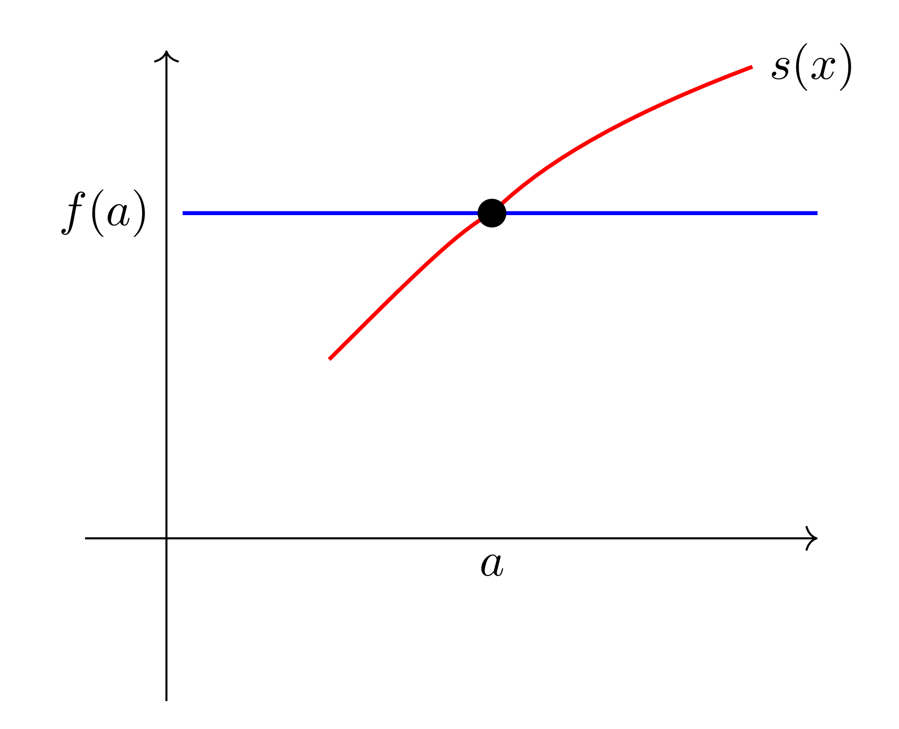
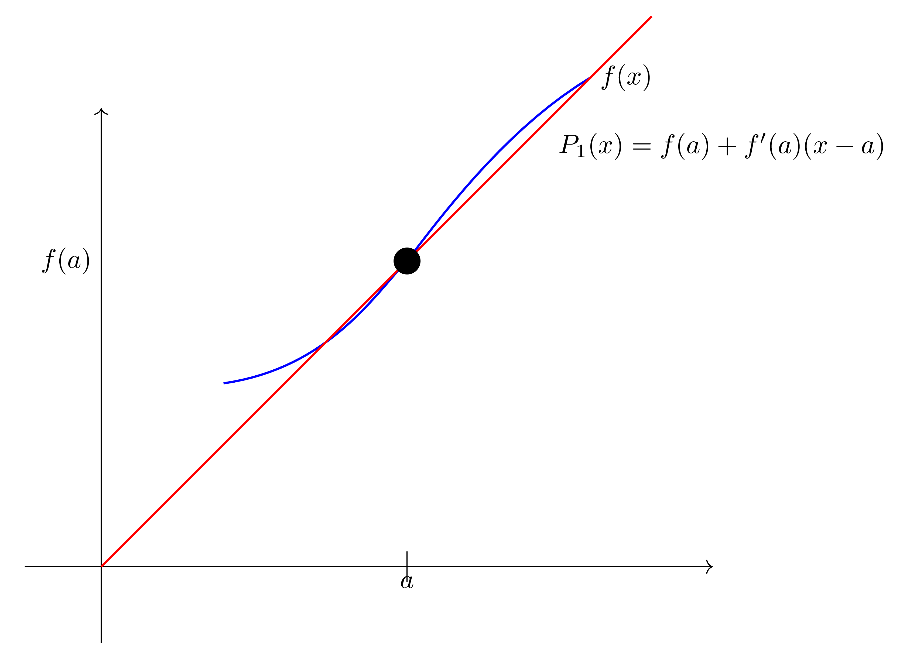
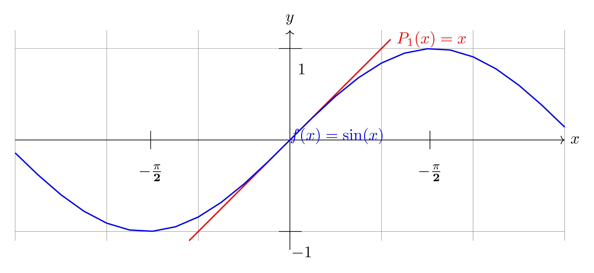
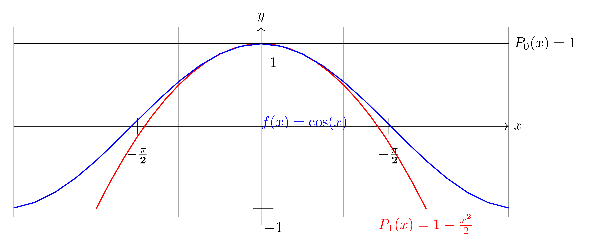

Chapter 10
Approximating Functions Using Series
$\S$ 10.1 Taylor Polynomials
The idea in this section is to find a way of choosing a polynomial which gives a good approximation of the values of some function $f(x)$ near a chosen point $x=a$.
We have already seen something of this in MTH-141.
For example, if $f(x)$ is continuous (cts.) at $x=a$, then for $x$ near $a$,
$$\large
f(x) \approx f(a) \approx(\text { i.e. } f(x) \text { is close to } f(a))
$$
and so if we let $P_{0}(x)$ be the constant $f(a)$
$$
P_{0}(x)=f(a)
$$
then
$P_{0}(x)$ gives us an approximation of
$f$ near
$x=a$.

Note that $P_{0}(x)$ has the same value as $f(x)$ for $x=a$.
A better way to do the approximation is using linear functions.
This gives us the tangent line approximation also called the linear approximation.
Recall that if $f(x)$ is differentiable at $x=a$, then for $x$ near a
$$\large
f(x) \approx f(a)+f^{\prime}(a)(x-a) .
$$

If we then let $P_{1}(x)=f(a)+f^{\prime}(a)(x-a)$, then $P_{1}$ gives us an approximation for $f$ near $x=a$.
Note that $P_{1}(x)$ has the same value as $f(x)$ at $x=a$ and also the same slope of $f$ at $x=a$.
Example:
Find the linear approximation for
$f(x)=\sin x$ near $x=0$.
Here
$f(x)=\sin x, f(0)=\sin (0)=0$
$f^{\prime}(x)=\cos x, \quad f^{\prime}(0)=\cos (0)=1$
and so
$P_{1}(x)=0+x=x$ and
$\sin x \approx x, (x $ is small)

e.g.
$\quad P_{1}(0.2)=0.2$ which is close to
$\sin (0.2)=0.1986 \dots$
Quadratic Approximations
Since a linear approximation is clearly better (more accurate) than a constant approximation, it is natural to guess that we could do even better if we approxmated $f(x)$ using quadratic polynomials
We choose our quadratic polynomial by extending the reasoning for the constant and linear approximations, namely we require that our quadratic have the same value, the same first derivative and the same second derivative as $f$ does at $x=a$.
So suppose that $f$ is twice differentiable at $x=a$ and let $P_{2}(x)$ be our quadratic approximation.
A useful trick here is instead of writing something like
$$
\large P_{2}(x)=C_{0}+C_{1} x+C_{2} x^{2}
$$
(which is probably the first thing one might try), we instead take into account that we want an approximation near $x=a$ and write
$$
\large P_{2}(x)=C_{0}+C_{1}(x-a)+C_{2}(x-a)^{2}
$$
Note that we already did something like this for the linear approximation.
Then:
$$
\begin{aligned}
\large P_{2}(x)=C_{0}+C_{1}(x-a)+C_{2}(x-a)^{2} \\
\large P_{2}(a)=C_{0}
\end{aligned}
$$
and so $P_{2}(a)=f(a) \Rightarrow C_{0}=f(a)$
$$
\begin{aligned}
& P_{2}^{\prime}(x)=C_{1}+2 C_{2}(x-a) \\
& P_{2}^{\prime}(a)=C_{1}
\end{aligned}
$$
and so $P_{2}^{\prime}(a)=f^{\prime}(a) \Rightarrow C_{1}=f^{\prime}(a)$.
$$
\begin{aligned}
& P_{2}^{\prime \prime}(x)=2 C_{2} \\
& P_{2}^{\prime \prime}(a)=2 C_{2}
\end{aligned}
$$
and so $P_{2}^{\prime \prime}(a)=f^{\prime \prime}(a) \Rightarrow 2 C_{2}=f^{\prime \prime}(a), C_{2}=\frac{f^{\prime \prime}(a)}{2}$
Get
$$
P_{2}(x)=f(0)+f^{\prime}(0)(x-a)+\frac{f^{\prime \prime}(a)}{2}(x-a)^{2}
$$
and so for $x$ near $a$,
$$
f(x) \approx f(a)+f^{\prime}(a)(x-a)+\frac{f^{\prime \prime}(a)}{2}(x-a)^{2}
$$
Note how the constant and linear terms are the same as for the constant and linear approximations. In this sense we can say the quadratic approximation 'contains' the constants and linear approximations.
Example:
Find the quadratic opproximation for $f(x)=\cos x$ near $x=0$.
Here $f(x)=\cos x, f(0)=\cos (0)=1$ and so $C_{0}=f(0)=1$.
$$
f^{\prime}(x)=-\sin x, \quad f^{\prime}(0)=-\sin (0)=0
$$
and so $C_{1}=f^{\prime}(0)=0$
$$
f^{\prime \prime}(x)=-\cos x, \quad f^{\prime \prime}(0)=-\cos (0)=-1
$$
and so $C_{2}=\frac{f^{\prime \prime}(0)}{2}=-\frac{1}{2}$.
Thus $P_{2}(x)=1-\frac{x^{2}}{2}$ and thus:
$$\large
\cos x \approx 1-\frac{x^{2}}{2}, \quad \text{( } x \text{ is small.) }
$$

which is much closer to the actual value of
$\cos (0.4)=0.921 \ldots$ than
$P_{0}(0.4)=P_{1}(0.4)=1$.
Approximation Using Higher Degree Polynomials
Suppose $f(x)$ is differentiable $n$ times at $x=a$ and we try to approximate $f(x)$ near a with a polynomial of degree $n$. Similarly to before we write this polynomial as
$$
\large P_{n}(x)=C_{0}+C_{1}(x-a)+C_{2}(x-a)^{2}+C_{3}(x-a)^{3}+\cdots+C_{n}(x-a)^{n} .
$$
As before we want $P_{n}(a)=f(a)$, and so setting $x=a$, we get
$$
\large P_{n}(a)=C_{0}+0+0+\dots+0=f(a)
$$
So $\quad C_{0}=f(a)$ (same as before).
Now differentiate with respect to $x$ to get
$$
\large P_{n}^{\prime}(x)=0+c_{1}+2 c_{2}(x-a)+3 c_{3}(x-a)^{2}+\quad+n c_{n}(x-a)^{n-1}
$$
Again, we want $P_{n}^{\prime}(a)=f^{\prime}(a)$ and so
$$
\large P_{n}^{\prime}(a)=C_{1}+0+\dots+0=f^{\prime}(a) .
$$
Thus $C_{1}=f^{\prime}(a)$ (again, same as before).
Differentrating again, we get.
$$
\large P_{n}^{\prime \prime}(x)=2 C_{2}+3 \cdot 2 C_{3}(x-a)+\cdots+n(n-1) C_{n}(x-a)^{n-2}
$$
We want $P_{n}^{\prime \prime}(a)=f^{\prime \prime}(a)$ and so
$$
\large P_{n}^{\prime \prime}(a)=2 c_{2}+0+\dots+0=f^{\prime \prime}(0) .
$$
Thus $2 C_{2}=f^{\prime \prime}(0)$ ie $c_{2}=\frac{f^{\prime \prime}(a)}{2 \cdot 1}=\frac{f^{\prime \prime}(a)}{2!} \quad$ (again)
Now differentiate again to get
$$
\large P_{n}^{\prime \prime \prime}(x)=3 \cdot 2 C_{3}+\cdots+n(n-1)(n-2) C_{n}(x-a)^{n-3}
$$
Similarly to above, we want $P_{n}^{\prime \prime \prime}(a)=f^{\prime \prime \prime}(a)$ and so
$$
\large P_{n}^{\prime \prime \prime}(a)=3 \cdot 2 c_{3}+0+\dots+0=f^{\prime \prime \prime}(a) .
$$
Thus $ 3 \cdot 2 c_{3}=f^{\prime \prime \prime}(a)$ or $\quad c_{3}=\frac{f^{\prime \prime \prime}(a)}{3 \cdot 2 \cdot 1}=\frac{f^{\prime \prime \prime}(a)}{3!}$
Continuing in this way, we would find that
$$
C_{4}=\frac{f^{(4)}(a)}{4 \cdot 3 \cdot 2 \cdot 1}=\frac{f^{(4)}(a)}{4!}
$$
and so on up to
$$
C_{n}=\frac{f^{(n)}(a)}{n(n-1)(n-2)-2 \cdot 1}=\frac{f^{(n)}(a)}{n!}
$$
To summarize
If $f$ is $n$ times differentiable at $x=a$, then for $x$ near a
$$
\begin{aligned}
\large f(x) & \approx P_{n}(x) \\
\large & =f(a)+f^{\prime}(a)(x-a)+\frac{f^{\prime \prime}(a)}{2!}(x-a)^{2}+\cdots+\frac{f^{(n)}(a)(x-a)^{n}}{n!}
\end{aligned}
$$
$P_{n}(x)$ is calted the Taylor polynomial of degree $n$ about $x=a$.
Since $0!=1,1!=1$, we can rewrite $P_{n}(x)$ as:
$$
\begin{aligned}
\large P_{n}(x) & =\frac{f(a)}{0!}+\frac{f^{\prime}(a)}{1!}(x-a)+\frac{f^{\prime \prime}(a)}{2!}(x-a)^{2}+\dots+\frac{f^{(n)}(a)}{n!}(x-a)^{n} \\
\large & =\sum_{i=0}^{n} \frac{f^{(i)}(a)}{i!}(x-a)^{i}
\end{aligned}
$$
Example:
Find $P_{7}(x)$ for $f(x)=\sin x$ about $x=0$. Compare $P_{7}\left(\frac{\pi}{3}\right)$ with $\sin \left(\frac{\pi}{3}\right)$.
Have
$$
\begin{array}{lll}
f(x)=\sin x, & \text { gives } f(0)=0, & c_{0}=\frac{0}{0!}=0 \\
f^{\prime}(x)=\cos x, & f^{\prime}(0)=1, & c_{1}=\frac{1}{1!}=1 \\
f^{\prime \prime}(x)=-\sin x, & f^{\prime \prime}(0)=0, & c_{2}=\frac{0}{2!}=0 \\
f^{\prime \prime \prime}(x)=-\cos x, & f^{\prime \prime}(0)=-1, & c_{3}=\frac{-1}{3!} \\
f^{(4)}(x)=\sin x, & f^{(4)}(0)=0, & c_{4}=\frac{0}{4!}=0 \\
f^{(5)}(x)=\cos x, & f^{(5)}(0)=1, & c_{5}=\frac{1}{5!} \\
f^{(6)}(x)=-\sin x & f^{(6)}(0)=0, & c_{6}=\frac{0}{6!}=0 \\
f^{(7)}(x)=-\cos x & f^{(7)}(0)=-1, & c_{7}=-\frac{1}{7!}
\end{array}
$$
Thus, for $x$ near 0
$$
\begin{aligned}
\large \sin x \approx P_{7}(x)= & 0+1 \cdot x+0 \cdot x^{2}-\frac{1}{3!} x^{3}+0 x^{4} \\
\large & +\frac{1}{5!} x^{5}+0 x^{6}-\frac{1}{7!} x^{7} \\
\large = & x-\frac{x^{3}}{3!}+\frac{x^{5}}{5!}
\end{aligned}
$$
At $\frac{\pi}{3}=1.0471976 \ldots$
$$
P_{7}\left(\frac{\pi}{3}\right)=0.8660213 \ldots
$$
while
$$
\sin \left(\frac{\pi}{3}\right)=\frac{\sqrt{3}}{2}=0.8660254 \ldots
$$
Example:
Find $P_{n}(x)$ for $f(x)=e^{x}$ about $x=0 \quad($ any $n)$.
Since $\quad \frac{d}{d x}(f(x))=\frac{d}{d x}\left(e^{x}\right)=e^{x}=f(x)$, for any $i$
$$
f^{(i)}(0)=e^{0}=1
$$
Thus $C_{i}=\frac{f^{(i)}(0)}{i!}=\frac{1}{i!}$
and so
$$
\large P_{n}(x)=1+x+\frac{x^{2}}{2!}+\frac{x^{3}}{3!}+\cdots+\frac{x^{n}}{n!}
$$
and for $x$ small
$$
\large e^{x} \approx 1+x+\frac{x^{2}}{2!}+\frac{x^{3}}{3!}+\cdots+\frac{x^{n}}{n!}
$$
Example:
Find $P_{n}(x)$ for $f(x)=\frac{1}{1-x}$, $x$ near 0.
$$
\begin{aligned}
\large f(x) & =\frac{1}{1-x}, f(0)=1, \text { so, } C_{0}=1 \\
\large f^{\prime}(x) & =\frac{-1}{(1-x)^{2}}(-1) \\
\large & =\frac{1}{(1-x)^{2}}, f^{\prime}(x)=1, \text { so, } C_{1}=1 \\
\large f^{\prime \prime}(x) & =\frac{-2}{(1-x)^{3}} \cdot(-1) \\
\large& =\frac{2}{(1-x)^{3}}, f^{\prime \prime}(0)=2, \text { so } C_{2}=\frac{2}{2}=1 \\
\large f^{\prime \prime \prime}(x) & =\frac{-6}{(1-x)^{4}}(-1) \\
\large & =\frac{6}{(1-x)^{4}}, f^{\prime \prime \prime}(0)=6, \text { so } C_{3}=\frac{6}{3!}=1
\end{aligned}
$$
Continuing in this way, we get $f^{(4)}(0)=24=4!$, $f^{(5)}(0)=120=5!$ and so on up to $f^{(n)}(0)=n!$
Thus
$$
\large C_{i}=\frac{f^{(i)}(0)}{i!}=\frac{i!}{i!}=1
$$
and so
$$
\large P_{n}(x)=1+x+x^{2}+x^{3}+\cdots+x^{n}
$$
and for $x$ small
$$
\large \frac{1}{1-x} \approx 1+x+x^{2}+\cdots+x^{n}
$$
Note that this is pretty much what we'd expect given that for $-1<x<1$, we have
$$
\large \frac{1}{1-x}=1+x+x^{2}+x^{3}+\cdots+x^{n}+
$$
Example:
Find $P_{n}(x)$ for $f(x)=\ln x$ for $x$ near 1.
$$
\begin{aligned}
\large & f(x)=\ln x, \text { so } f(1)=\ln 1=0 \quad \Rightarrow c_{0}=1 \\
\large & f^{\prime}(x)=\frac{1}{x}, f^{\prime}(1)=\frac{1}{1}=1 \quad \Rightarrow \quad c_{1}=1 \\
\large & f^{\prime \prime}(x)=-\frac{1}{x^{2}}, \quad f^{\prime \prime}(1)=-1 \quad \Rightarrow c_{2}=\frac{-1}{2!} \quad \Rightarrow c_{2}=\frac{-1}{2} \\
\large & f^{\prime \prime \prime}(x)=\frac{2}{x^{3}}, \quad f^{\prime \prime \prime}(1) = 2 \Rightarrow \quad c_{3}=\frac{2}{3!}=\frac{1}{3} \\
\large & f^{(4)}(x)=-\frac{6}{x^{4}}, \quad f^{(4)}(1)=-6 \quad \Rightarrow c_{4}=-\frac{6}{4!}=-\frac{1}{4}
\end{aligned}
$$
Continuing in this way, we see that
:
$$
\begin{aligned}
\large & f^{(i)}(1)=(-1)^{i-1} \cdot(i-1)! \quad \text { so: } \\
& \begin{array}{c}
\large C_{i}=\frac{f^{(i)}(1)}{i!}=\frac{(-1)^{i-1}(i-1)!}{i!}=\frac{(-1)^{i-1}(i-1)(i-2) \cdots 2 \cdot 1}{i(i-1)(i-2) \cdots 2 \cdot 1} \\
\large =\frac{(-1)^{i-1}}{i}
\end{array}
\end{aligned}
$$
Thus
$$
P_{n}(x)=(x-1)-\frac{(x-1)^{2}}{2}+\frac{(x-1)^{3}}{3}-\cdots+\frac{(-1)^{n-1}(x-1)^{n}}{n} .
$$
and
$$
\large \ln x \approx(x-1)-\frac{(x-1)^{2}}{2}+ \dots +\frac{(-1)^{n-1}(x-1)^{n}}{n},
$$
$x$ near 1 .